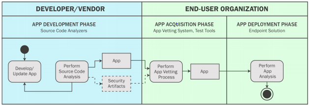

Proper deployment ensures the security of software and its
operating environment. Software security and integrity may be adversely affected if
appropriate controls are not incorporated into the integration and deployment
processes.
Learning Objectives
Identify the elements of the Secure Continuous Integration and Continuous
Delivery (CI/CD) pipeline.
Explain the application security toolchain.
Identify the steps to identify app vulnerabilities.
Overview
Inconsistent methods and lack of automation and integration of
security testing tools contribute to application security challenges. To ensure the
legitimacy of artifacts that are used during the build, safeguards can be
implemented. Verification in terms of checksums, hashes, and signatures may be used
to avoid integrating compromised dependencies. Mobile platform vendors provide
security mechanisms to protect the ecosystem from malicious or misbehaving apps.
Secure Software Deployment
One of the final stages in delivering secure software is
ensuring that neither the security nor integrity of developed applications is
compromised during deployment. The Secure Deployment (SD) practice focuses on this.
To this end, the practice’s first stream focuses on removing manual error by
automating the deployment process as much as possible and making its success
contingent upon the outcomes of integrated security verification checks. It also
fosters separation of duties by making adequately trained non-developers responsible
for deployment.2
The actions involved in deploying software securely depend on
the maturity of organizational processes. Secure deployment may require the
organization to:
Formalize the deployment process and secure the used tooling and processes.
Automate the deployment process over all stages and introduce sensible security
verification tests.
Automatically verify integrity of all deployed software regardless of whether
it's internally or externally developed.3
Secure Continuous Integration and
Continuous Delivery (CI/CD) Pipeline
DevOps requires tasks such as builds, testing, and deployment to
occur frequently and naturally. For that to happen, such tasks must be automated.
Continuous Integration/Continuous Delivery (CI/CD) practice relies on the automation
of much of the routine work of transforming code changes into working software,
including delivering tested code into production.
Continuous integration is a reference to the build and test
cycle. Continuous integration (CI) servers build the project from scratch when
developers merge their changes into a shared version control repository. Continuous
delivery (CD) is a reference to the code movement from one environment to another
(e.g., dev to QA to UAT). CI and CD typically go hand in hand, and the same CI
server will likely also handle CD.
Traced back to build servers like Hudson, Jenkins, and Microsoft
Team Foundation Server, CI/CD has become a collection of technologies and practices
that support the mission of releasing new code changes while keeping things stable.
In practice, CI/CD would rely on a system to trigger the process
of compilation and run all tests and checks that have been automated.
Clearly, inconsistent methods, lack of automation and
integration of security testing tools, and excessive false positives can contribute
to the application security challenges in CI/CD workflows.
A distinction between continuous delivery and continuous
deployment must be made. Whereas continuous integration (CI) is part of both
continuous delivery and continuous deployment (the step that involves deployment to
production is manual in the case of continuous delivery), continuous deployment goes
one step further than continuous delivery. With this practice, every change that
passes all stages of the production pipeline is released to customers with no human
intervention, and only a failed test will keep a new change from being deployed to
production.
Application Security Toolchain
Implementing an entire security toolchain into an existing
pipeline is challenging. Hooks for pre-commit checks, commit-time checks, build-time
checks, test-time checks, and deploy-time checks may all be needed. For example:
Using IDE security plugins to run scans before code is checked into the shared
repository.
Performing static code analysis with limited rulesets (e.g., top three
vulnerabilities) to provide developers with quick feedback upon committing
changes to the repository.
Running even more in-depth security checks (e.g., OWASP Top 10), and software
composition analysis of open-source components at build time.
Performing dynamic analysis or fuzzing.
Note that references above to IDE Plugins, SAST and DAST tools,
SCA tools, and fuzz tools were only used as examples among other tools in the
toolchain.
Build Artifact Verification
Builds with external dependencies may require safeguards to
ensure the legitimacy of artifacts (e.g., binaries) that are used during the build.
This is especially true when software relies on artifacts that are published on
third-party repositories.
Software composition analysis (SCA) tools can also be useful in
this regard. Keep in mind that these tools can generate an inventory report of all
open-source components in the software, including all direct and transitive
dependencies.
Verification in terms of checksums, hashes, and signatures may
be used to avoid integrating compromised dependencies.
Verified and Trusted Mobile Apps
App vulnerabilities are caused by several factors, including
design flaws and programming errors, which may have been inserted intentionally or
inadvertently. Unfortunately, in the app marketplace, apps containing
vulnerabilities are prevalent due in part to the submission of apps by developers
who may trade security for functionality to reduce cost and time to market.
Platform vendors provide various mechanisms to enforce security,
and there is much to discuss about the security models for each platform. In this
course, only a few security aspects at a high level for iOS and Android will be
discussed.
Anti-tamper
Publication of malicious versions of an app by bad actors on
third-party markets may be possible. Consider anti-tamper techniques,
tamper-detection mechanisms, or other safeguards that can help thwart bad actors’
attempts to reverse engineer an app and introduce malicious functionality.
iOS
With security at the core of the iOS platform design, there is a
tight integration of hardware, software, and services that protect the entire
ecosystem.
iOS only allows apps that it considers safe. First, it must
verify the source of the app and its integrity. The only executable code that iOS
will allow apps to run must be signed with an Apple-issued certificate. This is true
regardless of whether the app came with the device or is a third-party app. This
certificate validates the iOS app developers’ identity and tells iOS that they are
known to and verified by Apple. iOS developers are required to join the Apple
Developer Program. iOS apps are also reviewed to ensure adherence to certain
requirements for operations and bugs.
As part of iOS security, every third-party app is sandboxed.
This is done for several reasons, including preventing misbehaving apps from
compromising the system or other apps and accessing user data.
Android
Android was designed to be open, with an eye toward creating a
developer-friendly platform. Securing an open and developer-oriented platform
involves various layers of security and a strong security architecture.
For starters, although some developers are security experts,
some are not. Android’s approach was to cater to both types of developers, offering
flexible controls to the security-savvy and protecting the not-so-savvy through
secure defaults and built-in controls. Android relies on mechanisms to protect
against hacks and corruption through a chain of trust. For example, during the
verified boot process, each stage ensures the integrity and authenticity of the next
stage, before execution gets handed over.
Like iOS, Android sandboxes its apps. This keeps apps separate
from each other and protects apps and the system from misbehaving and malicious
apps. Android also has a read-only system partition that contains the kernel, OS
libraries, application runtime, platform apps, and other features. This partition
protects the most crucial parts of the operating system from malicious apps, as well
as from users who might accidentally delete or change a vital part of the OS.
App Security Requirements
General app security requirements define the software and
behavioral characteristics of an app that should or should not be present to ensure
security. These requirements are considered general since they can be applied across
all mobile applications and tailored to meet the security needs and risk tolerance
of an organization. General app security requirements may be derived from several
available standards, best practices, and resources, including those specified by
NIAP, OWASP, MITRE, and NIST.4
OWASP’s Mobile Application Security
Verification Standard (MASVS)
MASVS can be used to establish a level of confidence in the
security of mobile apps. The requirements were developed with the following
objectives in mind:
Use as a metric to provide a security standard against which existing mobile
apps can be compared by developers and application owners.
Use as guidance during all phases of mobile app development and testing.
Use during procurement to provide a baseline for mobile app security
verification.5
Modern computing devices use application stores to distribute
signed applications to users, including software developed by third parties.
Different platforms perform code signing in different ways, but in most cases,
application stores are operated by the OS or platform vendor to distribute only
those applications that have undergone some level of vetting based on a defined
policy. While individual developers may have their own signing keys, either for
development purposes or to authenticate to the store, the private keys used to sign
applications are under the control of the store, which serves as the Code Signing
System (CSS). Developers submit their applications to the store, and their
identities are verified before the apps undergo vetting. If everything is in order,
the store signs the app and publishes it, making it available for download. Devices
can be configured to only install apps that have been signed by a key controlled by
the application store.6
Mobile App Software Assurance
Software assurance activities for a mobile application may occur
in one or more phases of the mobile application life cycle: 1) during the
development of the app (i.e., the app development phase), 2) after receiving a
developed app but prior to its deployment by the end user organization (i.e., the
app acquisition phase) or 3) during deployment of the app by the end user
organization (i.e., the app deployment phase). These three phases of the mobile
application life cycle are shown in this figure.

Figure 1: Software Assurance During the Mobile App Life
Cycle7
Secure Software Release (7.3)
Proper deployment ensures the security of software and its operating environment. Software security and integrity may be adversely affected if appropriate controls are not incorporated into the integration and deployment processes.
Learning Objectives
Overview
Inconsistent methods and lack of automation and integration of security testing tools contribute to application security challenges. To ensure the legitimacy of artifacts that are used during the build, safeguards can be implemented. Verification in terms of checksums, hashes, and signatures may be used to avoid integrating compromised dependencies. Mobile platform vendors provide security mechanisms to protect the ecosystem from malicious or misbehaving apps.
Secure Software Deployment
One of the final stages in delivering secure software is ensuring that neither the security nor integrity of developed applications is compromised during deployment. The Secure Deployment (SD) practice focuses on this. To this end, the practice’s first stream focuses on removing manual error by automating the deployment process as much as possible and making its success contingent upon the outcomes of integrated security verification checks. It also fosters separation of duties by making adequately trained non-developers responsible for deployment.2
The actions involved in deploying software securely depend on the maturity of organizational processes. Secure deployment may require the organization to:
2 OWASP Foundation Software Assurance Security Model; https://owaspsamm.org/model/implementation/secure-deployment/; retrieved June 2023.
3 Ibid.
Secure Continuous Integration and Continuous Delivery (CI/CD) Pipeline
DevOps requires tasks such as builds, testing, and deployment to occur frequently and naturally. For that to happen, such tasks must be automated. Continuous Integration/Continuous Delivery (CI/CD) practice relies on the automation of much of the routine work of transforming code changes into working software, including delivering tested code into production.
Continuous integration is a reference to the build and test cycle. Continuous integration (CI) servers build the project from scratch when developers merge their changes into a shared version control repository. Continuous delivery (CD) is a reference to the code movement from one environment to another (e.g., dev to QA to UAT). CI and CD typically go hand in hand, and the same CI server will likely also handle CD.
Traced back to build servers like Hudson, Jenkins, and Microsoft Team Foundation Server, CI/CD has become a collection of technologies and practices that support the mission of releasing new code changes while keeping things stable.
In practice, CI/CD would rely on a system to trigger the process of compilation and run all tests and checks that have been automated.
Clearly, inconsistent methods, lack of automation and integration of security testing tools, and excessive false positives can contribute to the application security challenges in CI/CD workflows.
A distinction between continuous delivery and continuous deployment must be made. Whereas continuous integration (CI) is part of both continuous delivery and continuous deployment (the step that involves deployment to production is manual in the case of continuous delivery), continuous deployment goes one step further than continuous delivery. With this practice, every change that passes all stages of the production pipeline is released to customers with no human intervention, and only a failed test will keep a new change from being deployed to production.
Application Security Toolchain
Implementing an entire security toolchain into an existing pipeline is challenging. Hooks for pre-commit checks, commit-time checks, build-time checks, test-time checks, and deploy-time checks may all be needed. For example:
Note that references above to IDE Plugins, SAST and DAST tools, SCA tools, and fuzz tools were only used as examples among other tools in the toolchain.
Build Artifact Verification
Builds with external dependencies may require safeguards to ensure the legitimacy of artifacts (e.g., binaries) that are used during the build. This is especially true when software relies on artifacts that are published on third-party repositories.
Software composition analysis (SCA) tools can also be useful in this regard. Keep in mind that these tools can generate an inventory report of all open-source components in the software, including all direct and transitive dependencies.
Verification in terms of checksums, hashes, and signatures may be used to avoid integrating compromised dependencies.
Verified and Trusted Mobile Apps
App vulnerabilities are caused by several factors, including design flaws and programming errors, which may have been inserted intentionally or inadvertently. Unfortunately, in the app marketplace, apps containing vulnerabilities are prevalent due in part to the submission of apps by developers who may trade security for functionality to reduce cost and time to market.
Platform vendors provide various mechanisms to enforce security, and there is much to discuss about the security models for each platform. In this course, only a few security aspects at a high level for iOS and Android will be discussed.
Anti-tamper
Publication of malicious versions of an app by bad actors on third-party markets may be possible. Consider anti-tamper techniques, tamper-detection mechanisms, or other safeguards that can help thwart bad actors’ attempts to reverse engineer an app and introduce malicious functionality.
iOS
With security at the core of the iOS platform design, there is a tight integration of hardware, software, and services that protect the entire ecosystem.
iOS only allows apps that it considers safe. First, it must verify the source of the app and its integrity. The only executable code that iOS will allow apps to run must be signed with an Apple-issued certificate. This is true regardless of whether the app came with the device or is a third-party app. This certificate validates the iOS app developers’ identity and tells iOS that they are known to and verified by Apple. iOS developers are required to join the Apple Developer Program. iOS apps are also reviewed to ensure adherence to certain requirements for operations and bugs.
As part of iOS security, every third-party app is sandboxed. This is done for several reasons, including preventing misbehaving apps from compromising the system or other apps and accessing user data.
Android
Android was designed to be open, with an eye toward creating a developer-friendly platform. Securing an open and developer-oriented platform involves various layers of security and a strong security architecture.
For starters, although some developers are security experts, some are not. Android’s approach was to cater to both types of developers, offering flexible controls to the security-savvy and protecting the not-so-savvy through secure defaults and built-in controls. Android relies on mechanisms to protect against hacks and corruption through a chain of trust. For example, during the verified boot process, each stage ensures the integrity and authenticity of the next stage, before execution gets handed over.
Like iOS, Android sandboxes its apps. This keeps apps separate from each other and protects apps and the system from misbehaving and malicious apps. Android also has a read-only system partition that contains the kernel, OS libraries, application runtime, platform apps, and other features. This partition protects the most crucial parts of the operating system from malicious apps, as well as from users who might accidentally delete or change a vital part of the OS.
App Security Requirements
General app security requirements define the software and behavioral characteristics of an app that should or should not be present to ensure security. These requirements are considered general since they can be applied across all mobile applications and tailored to meet the security needs and risk tolerance of an organization. General app security requirements may be derived from several available standards, best practices, and resources, including those specified by NIAP, OWASP, MITRE, and NIST.4
OWASP’s Mobile Application Security Verification Standard (MASVS)
MASVS can be used to establish a level of confidence in the security of mobile apps. The requirements were developed with the following objectives in mind:
4 Josh Franklin, Michael Ogata, Stephen Quirolgico, Vincent Sritapan, Jeffrey Voas; National Institute of Standards and Technology; NIST SP 800-163 Rev. 1—Vetting the Security of Mobile Applications; https://nvlpubs.nist.gov/nistpubs/SpecialPublications/NIST.SP.800-163r1.pdf; retrieved June 2023.
5 OWASP Foundation; OWASP-MASVS Ver. 1.2; https://github.com/OWASP/owasp-masvs/releases/tag/v1.2; Retrieved June 2023.
Trusted Application Stores
Modern computing devices use application stores to distribute signed applications to users, including software developed by third parties. Different platforms perform code signing in different ways, but in most cases, application stores are operated by the OS or platform vendor to distribute only those applications that have undergone some level of vetting based on a defined policy. While individual developers may have their own signing keys, either for development purposes or to authenticate to the store, the private keys used to sign applications are under the control of the store, which serves as the Code Signing System (CSS). Developers submit their applications to the store, and their identities are verified before the apps undergo vetting. If everything is in order, the store signs the app and publishes it, making it available for download. Devices can be configured to only install apps that have been signed by a key controlled by the application store.6
Mobile App Software Assurance
Software assurance activities for a mobile application may occur in one or more phases of the mobile application life cycle: 1) during the development of the app (i.e., the app development phase), 2) after receiving a developed app but prior to its deployment by the end user organization (i.e., the app acquisition phase) or 3) during deployment of the app by the end user organization (i.e., the app deployment phase). These three phases of the mobile application life cycle are shown in this figure.
Figure 1: Software Assurance During the Mobile App Life Cycle7
6 Christopher Bean, Mike Boyle, Dorothy Cooley, David Cooper, Michael Jenkins, Andrew Regenscheid, Murugiah Souppaya; National Institute of Standards and Technology; Security Considerations for Code Signing; https://csrc.nist.gov/CSRC/media/Publications/white-paper/2018/01/26/security-considerations-for-code-signing/final/documents/security-considerations-for-code-signing.pdf; retrieved Juy 2023.
7 Josh Franklin et al.; NIST SP 800-163 Rev. 1—Vetting the Security of Mobile Applications; https://nvlpubs.nist.gov/nistpubs/SpecialPublications/NIST.SP.800-163r1.pdf.